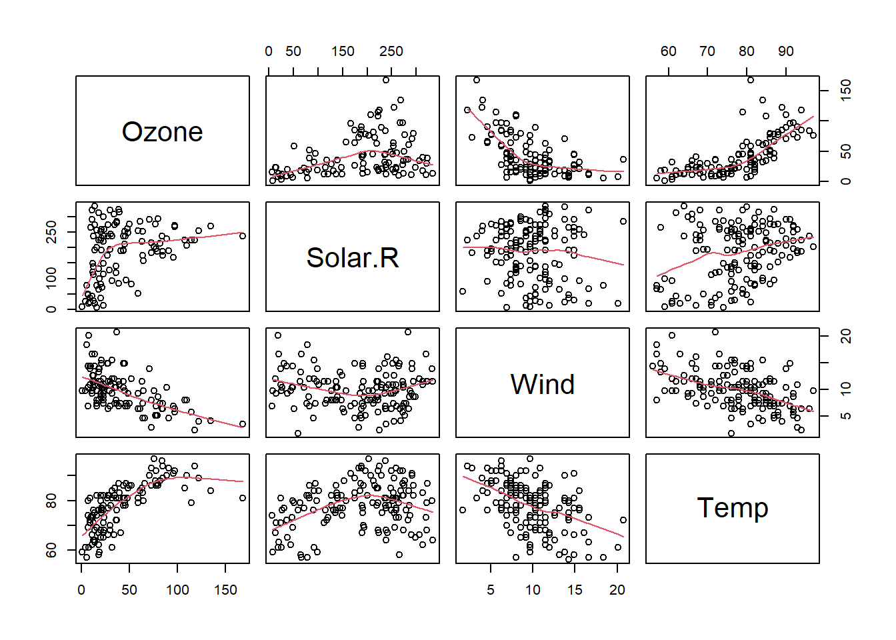
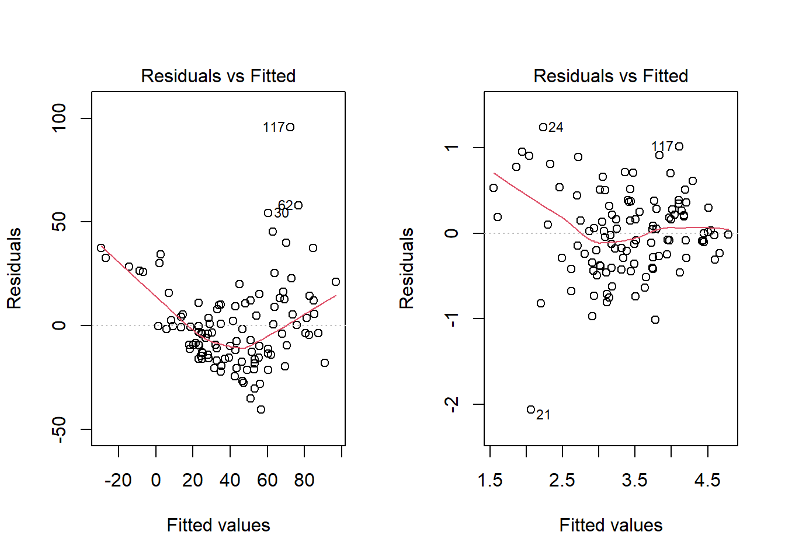
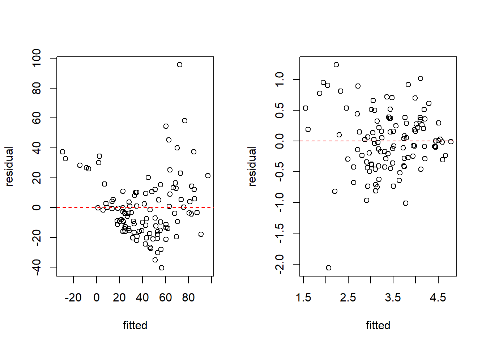
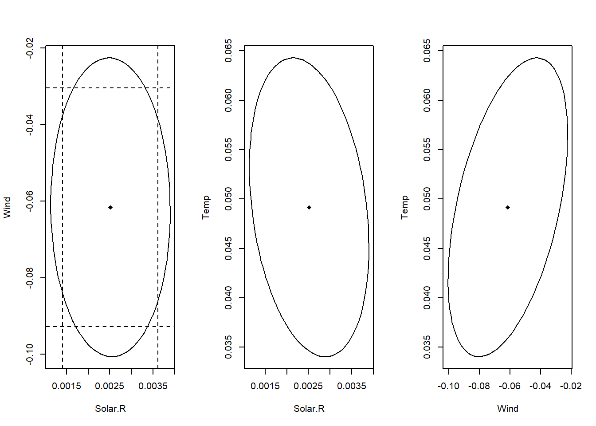
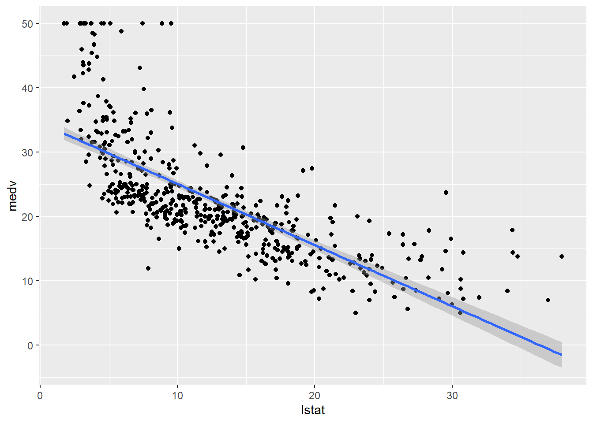
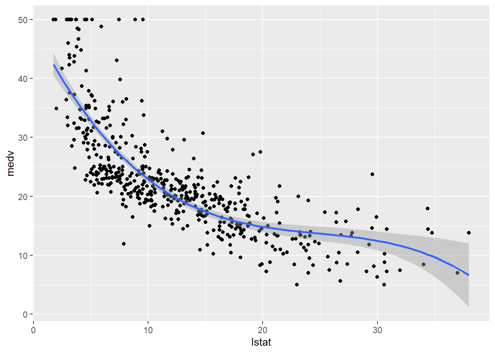
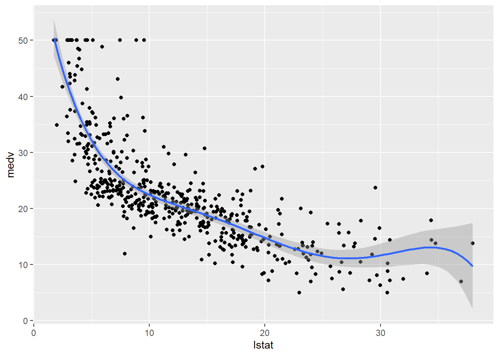

Chapter 4 다중선형회귀분석
일반적으로 자연현상, 사회현상은 여러 개의 설명변수로 반응변수와의 관계를 파악하여 현상을 설명해야 하는 경우가 대부분
설명변수가 2개 이상인 경우의 회귀모형을 다중회귀모형(multiple regression model)이라고 함
다중회귀모형은 다차원에 대한 표현을 해야 하므로 벡터와 행렬로 표현하게 됨
또한 다중회귀모형에서는 설명변수가 여러 개이므로 단순회귀모형에서와는 달리 설명변수들 간의 관계도 고려되어야 함
4.1 다중선형회귀모형 - 설명변수가 두 개인 경우
관측벡터 \((X_{11},X_{12},y_1), (X_{21},X_{22},y_2), \cdots, (X_{n1},X_{n2},y_n)\)에 대해 다중선형회귀모형을 생각해 보자.
\(X_1, X_2\)는 고정된(fixed) 설명변수이고 \(Y\)는 일변량 반응변수인 경우, 설명변수들과 반응변수 간의 선형회귀모형은
\[ Y=\beta_0+\beta_1X_{1}+\beta_2X_{2}+\epsilon \]
여기서 회귀모수로 \(\beta_0\)는 절편, \(\beta_1\)은 \(X_1\)과 관련된 회귀계수, \(\beta_2\)은 \(X_2\)와 관련된 회귀계수, 오차항 \(\epsilon \stackrel{iid}{\sim} N(0,\sigma^2)\)을 가정
\(n\)개 관측점에 대해 표현하면
\[ Y_i=\beta_0+\beta_1X_{1i}+\beta_2X_{2i}+\epsilon_i, \,\,\, i=1,2,\cdots, n \]
여기서 \(Cov(\epsilon_i,\epsilon_j)=0, \,\,\, i\ne j\)
- 선형회귀모형을 벡터와 행렬로 표현하면
\[ \mathbf{Y}=\mathbf{X}\beta +\epsilon \]
- 여기서
\[ \mathbf{Y}=\begin{pmatrix} Y_1\\Y_2\\\vdots\\Y_n \end{pmatrix}, \,\,\, x_i=\begin{pmatrix} 1\\X_{i1}\\X_{i2} \end{pmatrix}, \,\,\, \mathbf{X}=\begin{pmatrix}x_1'\\\vdots\\x_n' \end{pmatrix}=\begin{pmatrix}1 & X_{11}&X_{12}\\ \vdots &\vdots &\vdots \\ 1&X_{n1}&X_{n2} \end{pmatrix}, \,\,\, \beta=\begin{pmatrix}\beta_0\\ \beta_1\\ \beta_2 \end{pmatrix}, \,\,\, \epsilon=\begin{pmatrix} \epsilon_1\\ \epsilon_2 \\ \vdots \\ \epsilon_n \end{pmatrix} \]
\(\mathbf{Y}\)와 \(\epsilon\)은 \(n\times 1\) 벡터, \(x_i\)와 \(\beta\)는 \(3 \times 1\) 벡터이고 \(\mathbf{X}\)는 \(n\times 3\) 행렬
회귀계수 추정량을 구하기 위해 오차제곱합을 최소화
\[ S=\sum_{i=1}^n\epsilon_i^2 =\sum_{i=1}^n (Y_i-\beta_0-\beta_1X_{i1}-\beta_2X_{i2})^2 \]
- 각 모수에 대해 편미분하여 \(0\)으로 놓으면
\[ \begin{align} \frac{\partial S}{\partial\beta_0}&=2\sum_{i=1}^n(Y_i-\beta_0-\beta_1X_{i1}-\beta_2X_{i2})(-1)=0 \\ \frac{\partial S}{\partial\beta_1}&=2\sum_{i=1}^n(Y_i-\beta_0-\beta_1X_{i1}-\beta_2X_{i2})(-X_{i1})=0 \\ \frac{\partial S}{\partial\beta_2}&=2\sum_{i=1}^n(Y_i-\beta_0-\beta_1X_{i1}-\beta_2X_{i2})(-X_{i2})=0 \end{align} \]
- 정규방정식
\[ \begin{align} n\beta_0+\beta_1\sum_{i=1}^nX_{i1}+\beta_2\sum_{i=1}^nX_{i2}&=\sum_{i=1}^nY_i \\ \beta_0\sum_{i=1}^nX_{i1}+\beta_1\sum_{i=1}^nX_{i1}^2+\beta_2\sum_{i=1}^nX_{i1}X_{i2}&=\sum_{i=1}^n X_{i1}Y_i\\ \beta_0\sum_{i=1}^nX_{i2}+\beta_1\sum_{i=1}^nX_{i1}X_{i2}+\beta_2\sum_{i=1}^nX_{i2}^2&=\sum_{i=1}^n X_{i2}Y_i \end{align} \]
- 설명변수 개수가 증가함에 따라 동시에 풀어야 할 연립방정식 개수도 증가하기때문에 행렬을 이용하여 간결하고 이해하기 쉽게 표현
4.2 다중선형회귀모형 - 설명변수가 여러 개인 경우
\(p\)개 설명변수와 한 개의 반응변수를 포함한 관측벡터터 \((X_{11},X_{12},\cdots, X_{1p},y_1), (X_{21},X_{22},\cdots, X_{2p},y_2), \cdots, (X_{n1},X_{n2},\cdots, X_{np},y_n)\)에 대해 다중선형회귀모형을 생각해 보자.
\(X_1, X_2,\cdots, X_p\)는 \(p\)개의 고정된(fixed) 설명변수이고 \(Y\)는 일변량 반응변수인 경우, 설명변수들과 반응변수 간의 선형회귀모형은
\[ Y=\beta_0+\beta_1X_{1}+\cdots +\beta_pX_{p}+\epsilon \]
여기서 회귀모수로 \(\beta_0\)는 절편, \(\beta_j\), \(j=1,2,\cdots, p\)는 회귀계수, 오차항 \(\epsilon \stackrel{iid}{\sim} N(0,\sigma^2)\)을 가정
- \(n\)개 관측점에 대해 표현하면
\[ Y_i=\beta_0+\beta_1X_{1i}+\cdots+\beta_pX_{pi}+\epsilon_i, \,\,\, i=1,2,\cdots, n \]
- 일반적으로 오차항 \(\epsilon_i\)에 대한 가정으로부터
\(E(\epsilon_i)=0, \,\,\, i=1,2,,\cdots, n\)
\(Var(\epsilon_i)=\sigma^2, \,\,\, i=1,2,,\cdots, n\)
\(Cov(\epsilon_i, \epsilon_j)=0, \,\,\, i\ne j\)
즉, 오차항은 서로 독립이며 평균 \(0\), 분산 \(\sigma^2\)인 정규분포 \(N(0,\sigma^2)\)을 따른다고 가정함
오차항 \(\epsilon\)이 정규분포를 따르면 \(Y\)도 정규분포를 따르게 됨
따라서, 주어진 \(X\)에 대해서 \(Y\)의 기대값과 분산은 다음과 같음
\(E(Y_i)=\beta_0+\beta_1X_{1i}+\cdots+\beta_pX_{pi}, \,\,\, i=1,2,,\cdots, n\)
\(Var(Y_i)=\sigma^2, \,\,\, i=1,2,,\cdots, n\)
\(Cov(Y_i, Y_j)=0, \,\,\, i\ne j\)
- 모형을 행렬과 벡터로 표현하면
\[ \begin{pmatrix} Y_1\\Y_2\\\vdots\\Y_n \end{pmatrix}=\begin{pmatrix}1 & X_{11}&X_{12}&\cdots&X_{1p}\\ 1 &X_{21}&X_{22}&\cdots &X_{2p}\\ &\vdots & &\vdots &\\ 1&X_{n1}&X_{n2}&\cdots&X_{np} \end{pmatrix} \begin{pmatrix}\beta_0\\ \beta_1\\ \vdots \\ \beta_p \end{pmatrix}+\begin{pmatrix} \epsilon_1\\ \epsilon_2 \\ \vdots \\ \epsilon_n \end{pmatrix} \]
- 또한
\[ \mathbf{Y}=\mathbf{X}\beta+\epsilon \]
여기서 \(\mathbf{Y}\)와 \(\epsilon\)은 \(n\times 1\) 벡터, \(\mathbf{X}\)는 \(n\times (p+1)\) 행렬이고 \(\beta\)는 \((p+1) \times 1\) 벡터임
- 회귀분석과정으로 반응관측값 \(\mathbf{Y}\)를 설명변수 \(X_1\)과 \(X_2\)가 만드는 공간으로 투영시켜 반응추정값을 구하는 기하학적 표현
- 선형최소제곱법을 이용한 회귀직선 적합
4.3 모수 추정
4.3.1 최소제곱법을 이용한 모수추정
오차제곱합을 최소화하는 최소제곱법을 이용하여 회귀계수 추정량을 구하는 방법은 표본자료로부터 회귀계수를 추정하는 방법 중 가장 널리 이용되는 방법
회귀계수 \(\beta\)의 추정값 \(\hat{\beta}\)을 구하기 위한 오차제곱합
\[ \begin{align} S(\beta)&=\sum_{i=1}^n\epsilon_i^2\\ &=\sum_{i=1}^n(Y_i-\beta_0-\beta_1X_{i1}-\cdots - \beta_pX_{ip})^2\\ &=(\mathbf{Y}-\mathbf{X}\beta)'(\mathbf{Y}-\mathbf{X}\beta) \end{align} \]
- 다중선형회귀모형에서 \(\mathbf{X}\)가 완전계수(full rank) \(p+1\le n\)일 때, 회귀계수 \(\beta\)의 최소제곱추정량(least squares estimator)은
\[ \hat{\beta}=\mathbf{(X'X)^{-1}X'Y} \]
- Proof
\[ S(\beta)=\mathbf(Y'Y - Y'X\beta - \beta'X'Y+\beta'X'X\beta) \]
\[ \frac{\partial S}{\partial \beta}= -2\mathbf{X'Y}+2\mathbf{X'X\beta}=0 \]
- Proof hint:
- \(x, y\)가 \(n\)차원 벡터일 때
\[ \frac{\partial}{\partial x}(x'y)=\frac{\partial}{\partial x}(y'x)=y \]
- \(x\)가 \(n\)차원 벡터이고 \(\mathbf{A}\)가 \(n\times n\) 행렬일 때때
\[ \frac{\partial}{\partial x}(x' \mathbf{A})=\mathbf{A}, \,\,\, \frac{\partial}{\partial x}(\mathbf{A}x)=\mathbf{A'} \]
- \(n\)차원 벡터 \(x\)의 이차형식에 대한 미분은
\[ \frac{\partial}{\partial x}(x' \mathbf{A}x)=\mathbf{A}x + \mathbf{A'}x = 2\mathbf{A}x, \,\,\, \mathbf{A}: symmetric \]
- \(\mathbf{H=X(X'X)^{-1}X'}\) (hat matrix)라고 하면
\[ \begin{align} &\mathbf{\hat{Y}=X\hat{\beta}=HY}\\ &e=\mathbf{Y-\hat{Y}=[I-X(X'X)^{-1}X']Y=(I-H)Y} \end{align} \]
\(\mathbf{X'}e=0\)과 \(\mathbf{Y'}e=0\)를 만족함
잔차제곱합
\[ \begin{align} S(\beta)&=\sum_{i=1}^n(Y_i-\hat{\beta}_0-\hat{\beta}_1X_{i1}-\cdots - \hat{\beta}_pX_{ip})^2\\ &=e'e\\ &=\mathbf{Y'[I-X(X'X)^{-1}X']Y}\\ &=\mathbf{Y'Y-Y'X\hat{\beta}} \end{align} \]
- 단순회귀모형에 대해 다변량 추정량을 이용해 회귀계수벡터를 구해보자. 단순선형회귀모형 \(\mathbf{Y=X\beta+\epsilon}\)
\[ \begin{pmatrix} Y_1\\Y_2\\\vdots\\Y_n \end{pmatrix}=\begin{pmatrix}1 & X_{11}\\ 1 &X_{21}\\ \vdots &\vdots\\ 1& X_{n1}\end{pmatrix} \begin{pmatrix}\beta_0\\ \beta_1 \end{pmatrix}+\begin{pmatrix} \epsilon_1\\ \epsilon_2 \\ \vdots \\ \epsilon_n \end{pmatrix} \]
여기서 \(\mathbf{Y}\)와 \(\epsilon\)은 \(n\times 1\) 벡터, \(\mathbf{X}\)는 \(n\times 2\) 행렬이고 \(\beta\)는 \(2 \times 1\) 벡터임
\[ \mathbf{(X'X)}=\begin{pmatrix} n&\sum_{i=1}^nX_i\\ \sum_{i=1}^nX_i & \sum_{i=1}^nX_i^2 \end{pmatrix}, \,\,\, \mathbf{X'Y}=\begin{pmatrix} \sum_{i=1}^nY_i\\ \sum_{i=1}^nX_iY_i \end{pmatrix} \]
\[ \begin{align} \mathbf(X'X)^{-1}&=\frac{1}{n\sum_{i=1}^nX_i^2-(\sum_{i=1}^nX_i)^2}\begin{pmatrix}\sum_{i=1}^nX_i^2 & -\sum_{i=1}^nX_i\\ -\sum_{i=1}^nX_i & n \end{pmatrix}\\ &=\frac{1}{\sum_{i=1}^n(X_i-\bar{X})^2}\begin{pmatrix}\frac{1}{n}\sum_{i=1}^nX_i^2 & -\bar{X}\\ -\bar{X} & 1 \end{pmatrix} \end{align} \]
- 따라서
\[\begin{align} \hat{\beta}= \begin{pmatrix} \hat{\beta}_0 \\ \hat{\beta}_1 \end{pmatrix}=\mathbf{(X'X)^{-1}X'Y}&=\frac{1}{\sum_{i=1}^n(X_i-\bar{X})^2}\begin{pmatrix}\frac{1}{n}\sum_{i=1}^nX_i^2 & -\bar{X}\\ -\bar{X} & 1 \end{pmatrix}\begin{pmatrix} \sum_{i=1}^nY_i\\ \sum_{i=1}^nX_iY_i \end{pmatrix}\\ &= \begin{pmatrix} \bar{Y}-\hat{\beta}_1\bar{X}\\ \frac{\sum_{i=1}^nX_iY_i-n\bar{X}\bar{Y}}{\sum_{i=1}^n(X_i-\bar{X})^2}\end{pmatrix} \end{align} \]
4.3.2 가능도함수를 이용한 모수 추정
- 오차항이 정규분포를 따른다는 가정하에 관측값에 대한 가능도함수를 벡터와 행렬을 이용하여 표현하면
\[ P(\mathbf{Y}|\beta, \sigma^2, \mathbf{X})=(2\pi\sigma^2)^{-n/2}exp(-\frac{\mathbf{(Y-X\beta)'(Y-X\beta)}}{2\sigma^2}) \]
- 가능도함수를 log 변환을 하면 모수 \(\beta\)에 영향을 받는 부분은 \(-\mathbf{(Y-X\beta)'(Y-X\beta)}\) 부분만 남게 됨
- 최대가능도 추정량은 가능도 함수를 최대화 하는 모수 값을 찾기 때문에 결국 -부호를 제거하면 \(\mathbf{(Y-X\beta)'(Y-X\beta)}\)를 최소화 하는 모수 추정량을 찾는 문제가 같아짐
- 따라서 최대가능도 추정량은 최소제곱 추정량과 같음
\[ \hat{\beta}=\mathbf{(X'X)^{-1}X'Y} \]
- 로그 가능도함수를 \(\sigma^2\)에 대해 미분하여 얻은 최대가능도 추정량은
\[ \begin{align} \hat{\sigma}_{ML}^2=\frac{\mathbf{(Y-X\hat{\beta})'(Y-X\hat{\beta})}}{n} \end{align} \]
4.3.3 추정량의 성질
- 회귀계수의 최소제곱 추정량은 불편성과 최소분산성을 만족하는 우수한 추정량
가우스-마코프 정리
- 다중선형회귀모형의 오차벡터에 대해 \(E(\epsilon)=0\)이고 오차항이 서로 독립이고 등분산인 경우 회귀계수에 대한 최적선형불편추정량(best linear unbiased estimator: BLUE)은 최소제곱추정량임
증명
- 모수들의 선형조합 \(\psi=c'\beta\)는 다음과 같은 선형조합이 존재할 경우에만 추정가능함(estimable):
\[ E(a'y)=c'\beta \,\,\, \forall\beta \]
만약 \(\mathbf{X}\)가 완전 행렬계수(full rank)라면 모든 선형조합은 추정가능함
가우스-마코프 정리는 불편성을 지닌 선형조합들 중 최소제곱 추정량이 최소분산(minimum variance)을 가지고 유일하다고(unique) 설명함
\(a'y\)는 \(c'\beta\)의 불편추정량이라고 가정하면 모든 \(\beta\)에 대해 \(E(a'y)=c'\beta\) 이므로
\[ a'\mathbf{X}\beta=c'\beta \]
가 되므로 \(a'\mathbf{X}=c'\).
- 벡터 \(c\)는 \(\mathbf{X'}\)의 공간에 있어야함. 즉, \(\mathbf{X'X}\)의 공간에 있어야 하므로 \(c=\mathbf{X'X}\lambda\)를 만족하는 \(\lambda\)가 존재해야 함. 따라서
\[ c'\hat{\beta}=\lambda'\mathbf{X'X}\hat{\beta}=\lambda'\mathbf{X}'y \]
- 추정량 \(a'y\)의 분산을 구해 보면
\[ \begin{align} Var(a'y)&=Var(a'y-c'\hat{\beta}+c'\hat{\beta})\\ &=Var(a'y-\lambda'\mathbf{X}'y+c'\hat{\beta})\\ &=Var(a'y-\lambda'\mathbf{X}'y)+Var(c'\hat{\beta})+2cov(a'y-\lambda'\mathbf{X}'y,\lambda'\mathbf{X}'y) \end{align} \]
- 여기서
\[ \begin{align} cov(a'y-\lambda'\mathbf{X}'y,\lambda'\mathbf{X}'y)&=(a'-\lambda'\mathbf{X}')\sigma^2\mathbf{IX}\lambda\\ &=(a'\mathbf{X}-\lambda'\mathbf{X'X})\sigma^2\mathbf{I}\lambda\\ &=(c'-c')\sigma^2\mathbf{I}\lambda\\ &=0 \end{align} \]
- 따라서
\[ Var(a'y)=Var(a'y-\lambda'\mathbf{X}'y)+Var(c'\hat{\beta})\ge Var(c'\hat{\beta}) \]
즉, \(c'\hat{\beta}\)는 최소분산을 가짐
\(c'\hat{\beta}\)의 유일성
- 위 분산 텀에서 \(Var(c'\hat{\beta})\)와 같아지려면
\[ Var(a'y-\lambda'\mathbf{X}'y)=0 \]
이어야 하므로 \((a'-\lambda'\mathbf{X})=0\)이 되고 \(a'y=\lambda'\mathbf{X}'y=c'\hat{\beta}\)가 됨
- 따라서 등호는 \(a'y=c'\hat{\beta}\)인 경우에만 성립하므로 등호가 성립되는 경우의 유일한 추정량이 됨
회귀계수 최소제곱추정량 \(\hat{\beta}=\mathbf{(X'X)^{-1}X'Y}\) 특성
- 회귀계수의 불편성
\[ E(\hat{\beta})=E[\mathbf{(X'X)^{-1}X'Y}]=\mathbf{(X'X)^{-1}X'}E(\mathbf{Y})=\mathbf{(X'X)^{-1}X'X\beta}=\beta \]
- 회귀계수의 공분산 행렬
\[ cov(\hat{\beta})=cov(\mathbf{(X'X)^{-1}X'Y})=\mathbf{(X'X)^{-1}X'}cov(\mathbf{Y})\mathbf{X(X'X)^{-1}}= \sigma^2(\mathbf{X'X})^{-1} \]
- 잔차벡터 \(e=\{e_1,\cdots, e_n\}'\)에 대해
\[ E(e)=0, \,\,\, Cov(e)=\sigma^2(\mathbf{I-H}) \]
- 분산추정량
\[ S^2=\frac{e'e}{n-(p+1)}=\frac{\mathbf{Y'[I-X(X'X)^{-1}X']Y}}{n-p-1}=\frac{\mathbf{Y'[I-H]Y}}{n-p-1} \]
- \(E(S^2)=\sigma^2\)을 만족하므로 \(S^2\)은 \(\sigma^2\)의 불편추정량
4.4 회귀모형 추정
4.4.1 회귀계수에 대한 검정
회귀모형에 대한 유의성은 각 회귀계수에 대한 유의성 문제와 관련이 있음
가설
\[ H_{0j}:\beta_j=0 \,\,\, vs. H_{1j}:\beta_j\ne 0, \,\,\, j=1,2,\cdots,p \]
- 검정통계량
\[ t_j=\frac{\hat{\beta}_j}{\hat{Var}(\hat{\beta})}=\frac{\hat{\beta}_j}{s\sqrt{q_{jj}}} \sim t_{n-p-1} \]
여기서 \(q_{jj}\)는 \((\mathbf{X'X)^{-1}}\)의 \(j\)번째 대각선상 \(j=1,2,\ldots, p\)에 놓은 값임
유의수준 \(\alpha\) 검정
\[ |t_j|\ge t_{n-p-1}(\alpha/2) \,\,\, \text{then reject} \,\,\, H_0 \]
- \(H_0\)를 기각하는 경우 \(\beta_j=0\)이라고 할 수 없으므로 추정된 회귀계수가 회귀모형에 기여함을 알 수 있음
4.4.2 회귀계수에 대한 신뢰구간
각 회귀계수에 대한 신뢰구간은 \(t\)-분포를 이용하여 구함
\(\beta_j\)에 대한 \(100(1-\alpha)\%\) 신뢰구간은
\[ \hat{\beta}\pm t_{n-p-1}(\alpha/2)\sqrt{\hat{Var}(\hat{\beta}_j)} \]
\(\hat{\beta}\)의 분포
- \(\mathbf{Y=X\beta+\epsilon}\), \(rank(\mathbf{X})=p+1\)이고, \(\epsilon\sim N_n(0, \sigma^2I)\)일 때 회귀계수벡터 \(\beta\)의 최대우도추정량과 최소제곱추정량은 일치함
\[ \hat{\beta}=\mathbf{(X'X)^{-1}X'Y}\sim N_{p+1}(\beta,\sigma^2(\mathbf{X'X})^{-1}) \]
- 잔차에 대해서는 \(e=\mathbf{Y-X\beta}\)일 때,
\[ n\hat{\sigma}^2=e'e \sim \sigma^2 \chi_{n-p-1}^2 \]
동시신뢰영역
- \(\mathbf{Y=X\beta+\epsilon}\), \(rank(\mathbf{X})=p+1\)이고, \(\epsilon\sim N_n(0, \sigma^2I)\)일 때 회귀계수벡터 \(\beta\)에 대한 \(100(1-\alpha)\%\) 신뢰영역은
\[ (\beta-\hat{\beta})'\mathbf{X'X}(\beta-\hat{\beta})\le (p+1)S^2 F_{p+1,n-p-1}(\alpha) \]
- \(\beta_j\)에 대한 \(100(1-\alpha)\%\) 동시신뢰구간은
\[ \hat{\beta}_j\pm \sqrt{\hat{Var}(\hat{\beta}_j)}\times \sqrt{(p+1)F_{p+1,n-p-1}(\alpha)}, \,\,\, j=0, 1, \cdots , p \]
- 여기서 \(S^2\)은 MSE이고 \(\hat{Var}(\hat{\beta}_j)\)는 \(S^2(\mathbf{X'X})^{-1}\)의 대각선상에서 \(j\)번째 원소
4.5 모형에 대한 적합도 검정
- 회귀모형을 적합한 후에는 그 모형에 대한 적합성 또는 타당성에 대한 평가를 해야하고 만약 회귀모형에 대한 적합도가 충분하지 않다면 설명력이 높은 적절한 회귀모형을 찾아야 함
4.5.1 결정계수
회귀모형을 적합한 후 전체변동을 회귀모형에 의한 변동과 오차에 의한 변동으로 나누었을 대 회귀모형에 의해 설명되는 부분이 클수록 모형의 적합도가 증가하게 됨
제곱합 분해
\[ \begin{align} \mathbf{(Y-\bar{Y})'(Y-\bar{Y})}&=\mathbf{[(\hat{Y}-\bar{Y})+(Y-\hat{Y})]}'\mathbf{[(\hat{Y}-\bar{Y})+(Y-\hat{Y})]}\\ &=\mathbf{(\hat{Y}-\bar{Y})'(\hat{Y}-\bar{Y})+(Y-\hat{Y})'(Y-\hat{Y})}\\ &=\sum_{i=1}^n(\hat{Y}_i-\bar{Y})^2+\sum_{i=1}^ne_i^2\\ TSS&=SSR+SSE \end{align} \]
전체 변동 \(SST\)는 회귀제곱합 \(SSR\)과 잔차제곱합 \(SSE\)로 분해
결정계수
\[ R^2=\frac{\sum_{i=1}^n(\hat{Y}_j-\bar{Y})^2}{\sum_{i=1}^n(Y_j-\bar{Y})^2}=1-\frac{\sum_{i=1}^ne_i^2}{\sum_{i=1}^n(Y_j-\bar{Y})^2} \]
결정계수는 전체 변동 중 적합된 회귀식에 의해 설명되는 비율을 나타냄
결정계수 \(R^2\)는 설명변수 개수가 증가할수록 무조건 증가함
수정된 결정계수(adjusted \(R^2\))
\[ R_{adj}^2=1-(1-R^2)(\frac{n-1}{n-p-1})=1-\frac{SSE/(n-p-1)}{TSS/(n-1)} \]
총변동을 회귀모형에 의한 변동과 오차 요인에 의한 변동으로 분해하여 분산분석을 통해 모형의 유의성에 대해 검정이 가능함
가설
- \(H_0:\mathbf{Y}=\beta_0\mathbf{1}+\epsilon\)
- \(H_1:\mathbf{Y=X\beta+\epsilon}\)
- 여기서 \(\mathbf{1}=(1,\cdots, 1)'\)로 \(n\times 1\) 벡터
검정통계량
\[ F_{model}=\frac{(TSS-SSE)/p}{SSE/(n-p-1)}\sim F_{p,n-p-1} \]
- 유의수준 \(\alpha\) 검정
\[ F_{model}\ge F_{p,n-p-1}(\alpha) \,\,\, \text{then reject} \,\,\, H_0 \]
- 귀무가설하에서는 설명변수가 반응변수와 관련 없이 상수함수로 주어지는 경우로 이러한 상황에서는 두 변수 간의 관련식을 구할 필요가 없음
- 귀무가설을 기각하지 못하면 추정된 회귀모형이 유의하지 않게 됨
- 다중회귀모형 분산분석표
| 요인(source) | 자유도(df) | 제곱합(SS) | 평균제곱합(MS) | \(F\)-통계량 | 기각값 |
|---|---|---|---|---|---|
| 모형(model) | \(p\) | \(SSR\) | \(MSR=SSR/p\) | \(F_{model}=\frac{MSR}{MSE}\) | \(F_{p,n-p-1}\) |
| 오차(error) | \(n-p-1\) | \(SSE\) | \(MSE=SSE/(n-p-1)\) | ||
| 총합(total) | \(n-1\) | \(TSS\) |
4.5.2 회귀계수벡터에 대한 검정
다중회귀모형에서 반응변수와 설명변수벡터 간의 관계를 나타내는 부분이 회귀계수벡터이며, 이 회귀계수벡터에 대한 유의성이 모형의 유의성을 결정함
회귀계수벡터 \(\beta\)는 다음과 같이 표현 가능
\[ \beta=\begin{pmatrix} \beta_0\\ \beta_{\mathbf{X}} \end{pmatrix} \]
여기서 \(\beta_0\)는 절편을 나타내므로 설명변수와의 관계는 \(\beta_{\mathbf{X}}\)에서 나타나며 \(\beta_{\mathbf{X}}\)에 대한 유의성 검정이 모형의 유의성 검정과 같게 됨
위 가설을 회귀계수벡터에 대해 표현하면
- \(H_0: \beta_{\mathbf{X}}=0\)
- \(H_1: \beta_{\mathbf{X}}\ne 0\)
검정통계량
\[ F=\frac{SSR/p}{SSE/(n-p-1)}\sim F_{p,n-p-1} \]
- 유의수준 \(\alpha\) 검정
\[ F\ge F_{p,n-p-1}(\alpha) \,\,\, \text{then reject} \,\,\, H_0 \]
4.6 신뢰구간과 예측구간
반응변수는 변동이 있는 확률변수이기 대문에 정확한 예측값으로 점추정(point estimation)하기는 쉽지 않음
보완으로 회귀모형을 기반으로 반응변수를 포함한 예측구간 및 신뢰구간을 계산하여 구간추정(interval estimation)을 할 수 있음
4.6.1 반응평균과 반응평균에 대한 신뢰구간
회귀모형을 적합한 구간 내에 있는 설명변수에서의 반응변수의 예측 문제
설명변수 \(\mathbf{x}*=(X_1*, X_2*, \cdots, X_p*)'\)에서의 종속변수 \(Y*=\beta_0+\beta_1X_1*+\beta_2X_2*+\cdots + \beta_pX_p*\)의 반응평균을 구하면
\[ y*=E(Y*)=\beta_0+\beta_1X_1*+\beta_2X_2*+\cdots + \beta_pX_p*=\mathbf{x}*'\beta \]
여기서 \(\mathbf{x}*=(1,X_1*,X_2*,\cdots ,X_p*)'\)
\(y*\)의 적합값(fitted value)
\[ \hat{y}*=\mathbf{x}*'\hat{\beta} \]
- \(Y*\)의 불편추정량은 \(\hat{y}*\)이고, 분산은
\[ Var(\hat{y}*)=\sigma^2\mathbf{x}*'(\mathbf{X'X})^{-1}\mathbf{x}* \]
- 따라서 반응평균에 대한 추정값은
\[ \hat{y}*=\mathbf{x}*'\hat{\beta}\sim N(y*,\sigma^2\mathbf{x}*'(\mathbf{X'X})^{-1}\mathbf{x}*) \]
- \(\mathbf{x}*'\)에서 반응평균에 대한 추정값 \(\hat{y}*\)에 대한 \(100(1-\alpha)\%\) 신뢰구간
\[ \hat{y}*\pm t_{n-p-1}(\alpha/2)\hat{se}[\hat{y}*] \]
- \(\hat{se}[\hat{y}*]\)는 추정값 \(\hat{y}*\)의 추정된 표준오차
\[ \hat{se}[\hat{y}*]=S\sqrt{\mathbf{x}*'(\mathbf{X'X})^{-1}\mathbf{x}*} \]
- 여기서 \(S=\sqrt{MSE_{model}}\)이고 \(MSE_{model}\)은 적합한 모형에 대한 평균제곱오차
4.7 잔차분석
잔차는 관측값과 추정값의 차이로 정의되며 회귀모형에 의하여 설명되지 않는 변동의 크기를 나타내는 오차에 대한 추정값
따라서 오차에 대한 가정의 성립여부는 잔차를 거토해 봄으로써 알 수 있음
다중선형회귀모형에서 오차항에 대한 가정
- 등분산성
- 독립성
- 평균 0인 정규성
4.7.1 회귀함수의 선형성
선형회귀함수가 적합한지 적합하지 않은지에 대한 문제는 자료의 산점도를 그려보거나 선형회귀모형을 적합한 후의 잔차를 각 설명변수 또는 반응변수에 대해 그려봄으로써 추측할 수 있음
회귀직선의 모형이 타당하고 오차의 등분산성이 성립된다면 설명변수에 대한 잔차 산점도 또는 반응변수에 대한 잔차 산점도에서 잔차는 0을 중심으로 랜덤하게 나타나게 됨
예를 들어, 산점도에서 이차 곡선이나 삼차 곡선의 형태가 나타난다면 가정된 선형회귀함수는 적절하지 못하다고 볼 수 있음
4.8 R을 이용한 다중회귀분석
- R에서 lm() 함수를 이용하여 회귀분석 후 생성된 객체에 대해 사용할 수 있는 함수
| 함수 이름 | 함수 설명 |
|---|---|
| print() | 출력 |
| summary() | 회귀분석후 기본적인 결과 |
| coef(), coefficients() | 추정된 회귀계수값 |
| resid(), residuals() | 잔차 |
| fitted() | 반응변수 추정값 |
| anova() | 요인에 대한 분산분석결과 |
| predict() | 새로운 데이터에 대한 추정 |
| plot() | 회귀진단 그림 |
| confint() | 회귀계수에 대한 신뢰구간 |
| deviance() | 잔차제곱합 |
| vcov() | 추정된 분산-공분산행렬 |
| logLik() | 정규성 가정하에서 로그-가능도값 |
| AIC() | 정보기준값, AIC |
| step() | AIC 기준으로 모형 선택과정 |
Example
- R에 내장되어 있는 환경 데이터 airquality는 New York 도시의 153일 동안 오존, 일조량, 기온과 풍속을 기록한 데이터
head(airquality)## Ozone Solar.R Wind Temp Month Day
## 1 41 190 7.4 67 5 1
## 2 36 118 8.0 72 5 2
## 3 12 149 12.6 74 5 3
## 4 18 313 11.5 62 5 4
## 5 NA NA 14.3 56 5 5
## 6 28 NA 14.9 66 5 6- 산점도
pairs(airquality[,1:4], panel=panel.smooth)
pairs() 함수는 산점도 행렬을 보여주며, panel=panel.smooth 옵션을 사용하여 평활(smooth)시킨 함수를 추정하여 선으로 표현
Ozone에 대한 다중회귀모형
lm.a <- lm(Ozone ~ Solar.R + Wind + Temp, data=airquality)
summary(lm.a)##
## Call:
## lm(formula = Ozone ~ Solar.R + Wind + Temp, data = airquality)
##
## Residuals:
## Min 1Q Median 3Q Max
## -40.485 -14.219 -3.551 10.097 95.619
##
## Coefficients:
## Estimate Std. Error t value Pr(>|t|)
## (Intercept) -64.34208 23.05472 -2.791 0.00623 **
## Solar.R 0.05982 0.02319 2.580 0.01124 *
## Wind -3.33359 0.65441 -5.094 1.52e-06 ***
## Temp 1.65209 0.25353 6.516 2.42e-09 ***
## ---
## Signif. codes: 0 '***' 0.001 '**' 0.01 '*' 0.05 '.' 0.1 ' ' 1
##
## Residual standard error: 21.18 on 107 degrees of freedom
## (결측으로 인하여 42개의 관측치가 삭제되었습니다.)
## Multiple R-squared: 0.6059, Adjusted R-squared: 0.5948
## F-statistic: 54.83 on 3 and 107 DF, p-value: < 2.2e-16- 추정된 회귀계수를 이용하여 Ozone에 대한 추정된 회귀식
\[ Ozone=-63.34+0.059Solar.R-3.333Wind+1.652Temp \]
모형에 대한 결정계수는 \(61\%\)이고, 회귀계수 검정결과 모든 회귀계수는 유의함
log(Ozone)에 대한 다중회귀모형
lm.b <- lm(log(Ozone) ~ Solar.R + Wind + Temp, data=airquality)
summary(lm.b)##
## Call:
## lm(formula = log(Ozone) ~ Solar.R + Wind + Temp, data = airquality)
##
## Residuals:
## Min 1Q Median 3Q Max
## -2.06193 -0.29970 -0.00231 0.30756 1.23578
##
## Coefficients:
## Estimate Std. Error t value Pr(>|t|)
## (Intercept) -0.2621323 0.5535669 -0.474 0.636798
## Solar.R 0.0025152 0.0005567 4.518 1.62e-05 ***
## Wind -0.0615625 0.0157130 -3.918 0.000158 ***
## Temp 0.0491711 0.0060875 8.077 1.07e-12 ***
## ---
## Signif. codes: 0 '***' 0.001 '**' 0.01 '*' 0.05 '.' 0.1 ' ' 1
##
## Residual standard error: 0.5086 on 107 degrees of freedom
## (결측으로 인하여 42개의 관측치가 삭제되었습니다.)
## Multiple R-squared: 0.6644, Adjusted R-squared: 0.655
## F-statistic: 70.62 on 3 and 107 DF, p-value: < 2.2e-16log(Ozone) 모형에 대한 결정계수는 \(66\%\)로, log 변환을 취한 경우가 약간 높음
유의수준 \(5\%\)에서 회귀계수 검정결과 각 회귀계수는 유의함
잔차 그림
par(mfrow=c(1,2))
plot(lm.a, which=1)
plot(lm.b, which=1)
par(mfrow=c(1,2))
plot(fitted(lm.a), residuals(lm.a), xlab="fitted", ylab="residual")
abline(h=0, lty=2, col="red")
plot(fitted(lm.b), residuals(lm.b), xlab="fitted", ylab="residual")
abline(h=0,lty=2, col="red")
Ozone과 log(Ozone)에 대한 잔차 그림을 살펴보면 Ozone 모형은 오차에 대한 가정을 벗어나 보임
정규성 검정
shapiro.test(residuals(lm.a))##
## Shapiro-Wilk normality test
##
## data: residuals(lm.a)
## W = 0.91709, p-value = 3.618e-06shapiro.test(residuals(lm.b))##
## Shapiro-Wilk normality test
##
## data: residuals(lm.b)
## W = 0.97749, p-value = 0.05726잔차에 대한 Shapiro-Wilks 정규성 검정 결과 유의수준 \(5\%\)에서 Ozone 모형은 귀무가설을 기각하여 정규성을 만족하지 못함
독립성 검정
library(lmtest)
dwtest(Ozone ~ Solar.R + Wind + Temp, data=na.omit(airquality))##
## Durbin-Watson test
##
## data: Ozone ~ Solar.R + Wind + Temp
## DW = 1.9355, p-value = 0.3347
## alternative hypothesis: true autocorrelation is greater than 0dwtest(log(Ozone) ~ Solar.R + Wind + Temp, data=na.omit(airquality))##
## Durbin-Watson test
##
## data: log(Ozone) ~ Solar.R + Wind + Temp
## DW = 1.8068, p-value = 0.1334
## alternative hypothesis: true autocorrelation is greater than 0두 모형 모두 독립성을 만족하는 것으로 나타남
동시 신뢰영역
library(ellipse)
par(mfrow=c(1,3))
plot(ellipse(lm.b,c(2,3)), type="l")
points(coef(lm.b)[2], coef(lm.b)[3], pch=18)
abline(v=confint(lm.b)[2,], lty=2)
abline(h=confint(lm.b)[3,], lty=2)
plot(ellipse(lm.b,c(2,4)), type="l")
points(coef(lm.b)[2], coef(lm.b)[4], pch=18)
plot(ellipse(lm.b,c(3,4)), type="l")
points(coef(lm.b)[3], coef(lm.b)[4], pch=18)
4.9 다항회귀모형
설명변수와 반응변수 사이의 곡선 관계는 다항식(polynomial)을 이용해 표현할 수 있음
수학적으로 \(k\)차 다항식은
\[ y=c_0+c_1x+c_2x^2+\cdots+c_kx^k \]
- 통계적 모형은
\[ Y=\beta_0+\beta_1x+\beta_2x^2+\cdots+\beta_kx^k+\epsilon \]
Example
- 8마리의 실험쥐에 대해 \(A\)약의 용량을 달리하여 투여한지 2주 후 몸무게 증가량을 측정하였다.
| 투여량 | 1 | 2 | 3 | 4 | 5 | 6 | 7 |
|---|---|---|---|---|---|---|---|
| 몸무게 증가량 | 1.0 | 1.2 | 1.8 | 2.0 | 3.8 | 4.3 | 6.5 |
- 이와 같은 데이터에 대해 이차항이 포함된 다항회귀모형을 적합해보자
x <- c(1,2,3,4,5,6,7,8)
y <- c(1,1.2,1.8,2.0,3.8,4.3,6.5,9.0)
mouse.lm <- lm(y~x+I(x^2))
summary(mouse.lm)##
## Call:
## lm(formula = y ~ x + I(x^2))
##
## Residuals:
## 1 2 3 4 5 6 7 8
## -0.14167 0.05119 0.28214 -0.24881 0.45833 -0.49643 -0.11310 0.20833
##
## Coefficients:
## Estimate Std. Error t value Pr(>|t|)
## (Intercept) 1.49643 0.51333 2.915 0.03320 *
## x -0.53571 0.26172 -2.047 0.09602 .
## I(x^2) 0.18095 0.02839 6.374 0.00141 **
## ---
## Signif. codes: 0 '***' 0.001 '**' 0.01 '*' 0.05 '.' 0.1 ' ' 1
##
## Residual standard error: 0.3679 on 5 degrees of freedom
## Multiple R-squared: 0.988, Adjusted R-squared: 0.9832
## F-statistic: 205.6 on 2 and 5 DF, p-value: 1.582e-05plot(x,y)
lines(x,mouse.lm$fitted.values)
- 다항회귀분석 결과, 추정회귀식
\[ \hat{Y}=1.496-0.536X+0.181X^2 \]
\(R^2=0.983\)으로 추정된 회귀직선의 설명력이 매우 높음
일차 회귀계수의 유의성 검정으로
\[ H_0:\beta_1=0 \,\,\, vs. \,\,\, H_1:\beta_1\ne 0 \]
\(t\) 통계량은 -2.047으로 \(p-value=0.096<0.10\)으로 유의수준 \(10\%\)에서 \(H_0\)를 기각함(유의수준 \(5\%\)에서는 기각하지 못함)
이차 회귀계수의 유의성 검정으로
\[ H_0:\beta_2=0 \,\,\, vs. \,\,\, H_1:\beta_2\ne 0 \]
- \(t\) 통계량은 6.374이며 \(p-value=0.00141<0.10\)으로 유의수준 \(10\%\)에서 \(H_0\)를 기각함(유의수준 \(5\%\)에서도 기각함)
Example
보스턴의 lower status에 따라 주택 가치에 대한 자료이다.
이와 같은 데이터에 대해 선형회귀모형과 다항회귀모형을 비교해 보자
library(ggplot2)
data("Boston", package = "MASS")
head(Boston)## crim zn indus chas nox rm age dis rad tax ptratio black lstat
## 1 0.00632 18 2.31 0 0.538 6.575 65.2 4.0900 1 296 15.3 396.90 4.98
## 2 0.02731 0 7.07 0 0.469 6.421 78.9 4.9671 2 242 17.8 396.90 9.14
## 3 0.02729 0 7.07 0 0.469 7.185 61.1 4.9671 2 242 17.8 392.83 4.03
## 4 0.03237 0 2.18 0 0.458 6.998 45.8 6.0622 3 222 18.7 394.63 2.94
## 5 0.06905 0 2.18 0 0.458 7.147 54.2 6.0622 3 222 18.7 396.90 5.33
## 6 0.02985 0 2.18 0 0.458 6.430 58.7 6.0622 3 222 18.7 394.12 5.21
## medv
## 1 24.0
## 2 21.6
## 3 34.7
## 4 33.4
## 5 36.2
## 6 28.7plot(medv~lstat, Boston)
model1 <- lm(medv ~ poly(lstat, 1, raw = TRUE), data = Boston)
summary(model1)##
## Call:
## lm(formula = medv ~ poly(lstat, 1, raw = TRUE), data = Boston)
##
## Residuals:
## Min 1Q Median 3Q Max
## -15.168 -3.990 -1.318 2.034 24.500
##
## Coefficients:
## Estimate Std. Error t value Pr(>|t|)
## (Intercept) 34.55384 0.56263 61.41 <2e-16 ***
## poly(lstat, 1, raw = TRUE) -0.95005 0.03873 -24.53 <2e-16 ***
## ---
## Signif. codes: 0 '***' 0.001 '**' 0.01 '*' 0.05 '.' 0.1 ' ' 1
##
## Residual standard error: 6.216 on 504 degrees of freedom
## Multiple R-squared: 0.5441, Adjusted R-squared: 0.5432
## F-statistic: 601.6 on 1 and 504 DF, p-value: < 2.2e-16ggplot(Boston, aes(lstat, medv) ) + geom_point() +
stat_smooth(method = lm, formula = y ~ poly(x, 1, raw = TRUE))
model3 <- lm(medv ~ poly(lstat, 3, raw = TRUE), data = Boston)
summary(model3)##
## Call:
## lm(formula = medv ~ poly(lstat, 3, raw = TRUE), data = Boston)
##
## Residuals:
## Min 1Q Median 3Q Max
## -14.5441 -3.7122 -0.5145 2.4846 26.4153
##
## Coefficients:
## Estimate Std. Error t value Pr(>|t|)
## (Intercept) 48.6496253 1.4347240 33.909 < 2e-16 ***
## poly(lstat, 3, raw = TRUE)1 -3.8655928 0.3287861 -11.757 < 2e-16 ***
## poly(lstat, 3, raw = TRUE)2 0.1487385 0.0212987 6.983 9.18e-12 ***
## poly(lstat, 3, raw = TRUE)3 -0.0020039 0.0003997 -5.013 7.43e-07 ***
## ---
## Signif. codes: 0 '***' 0.001 '**' 0.01 '*' 0.05 '.' 0.1 ' ' 1
##
## Residual standard error: 5.396 on 502 degrees of freedom
## Multiple R-squared: 0.6578, Adjusted R-squared: 0.6558
## F-statistic: 321.7 on 3 and 502 DF, p-value: < 2.2e-16ggplot(Boston, aes(lstat, medv) ) + geom_point() +
stat_smooth(method = lm, formula = y ~ poly(x, 3, raw = TRUE))
model5 <- lm(medv ~ poly(lstat, 5, raw = TRUE), data = Boston)
summary(model5)##
## Call:
## lm(formula = medv ~ poly(lstat, 5, raw = TRUE), data = Boston)
##
## Residuals:
## Min 1Q Median 3Q Max
## -13.5433 -3.1039 -0.7052 2.0844 27.1153
##
## Coefficients:
## Estimate Std. Error t value Pr(>|t|)
## (Intercept) 6.770e+01 3.604e+00 18.783 < 2e-16 ***
## poly(lstat, 5, raw = TRUE)1 -1.199e+01 1.526e+00 -7.859 2.39e-14 ***
## poly(lstat, 5, raw = TRUE)2 1.273e+00 2.232e-01 5.703 2.01e-08 ***
## poly(lstat, 5, raw = TRUE)3 -6.827e-02 1.438e-02 -4.747 2.70e-06 ***
## poly(lstat, 5, raw = TRUE)4 1.726e-03 4.167e-04 4.143 4.03e-05 ***
## poly(lstat, 5, raw = TRUE)5 -1.632e-05 4.420e-06 -3.692 0.000247 ***
## ---
## Signif. codes: 0 '***' 0.001 '**' 0.01 '*' 0.05 '.' 0.1 ' ' 1
##
## Residual standard error: 5.215 on 500 degrees of freedom
## Multiple R-squared: 0.6817, Adjusted R-squared: 0.6785
## F-statistic: 214.2 on 5 and 500 DF, p-value: < 2.2e-16ggplot(Boston, aes(lstat, medv) ) + geom_point() +
stat_smooth(method = lm, formula = y ~ poly(x, 5, raw = TRUE))
4.10 표준화 회귀모형
회귀계수벡터를 구하기 위해 \(\mathbf{(X'X)^{-1}}\) 행렬을 이용하는 데 행렬 계산시 반올림오차 등에 민감함
\(\mathbf{(X'X)}\)의 결정식이 0에 가까울 경우는 \(\mathbf{X}\)변수들의 상관성이 높은 경우임
또한 \(\mathbf{(X'X)}\)의 값이 단위에 큰 차이가 날 경우는 각 \(\mathbf{X}\)변수를 표준화한 후 안정된 \(\mathbf{(X'X)}\)를 얻을 수 있음
이러한 과정을 이용한 회귀모형을 표준화 회귀모형이라 함
변수에 대한 상관성 변환(correlation transformation)은 각 변수가 동일한 단위를 갖게 할 수 있어 회귀계수를 비교할 경우 장점이 있음
다음의 다중선형 회귀모형을 고려하자
\[ Y=\beta_0+\beta_1X_1+\beta_2X_2+\cdots +\beta_pX_p+\epsilon \]
변수 표준화(standardization)는 평균으로 중심화(centering)하고 표준편차로 스케일링(scaling)하여 비례 축소함
변수 표준화
\[ Y_i*=\frac{Y_i-\bar{Y}}{S_Y}, \,\,\, X_{ij}*=\frac{X_{ij}-\bar{X}_j}{S_{X_j}} \]
- \(n\)개 관측점에 대해 표현하며, 표준화 회귀모형(standardized regression model)은
\[ Y_i*=\beta_1*X_{i1}*+\beta_2*X_{i2}*+\cdots +\beta_p *X_{ip}*+\epsilon_i, \,\,\, i=1,2, \ldots, n \]
여기서 절편항은 표준화 결과 0이 되어 모형에서 사라짐
표준화 회귀모형에서의 회귀계수 \(\beta*\)와 원래 모형에서의 회귀계수 \(\beta\)의 관계는 크기조정 요소(scaling factor)간의 비로 나타남
\[ \beta_j=\frac{S_Y}{S_{X_j}}\beta_j* \]
Example
- 랜덤 발샐 데이터에 대해 회귀모형을 적합하고, 표준화 회귀계수도 살펴보자.
set.seed(1)
n <- 30
x1 <- rnorm(n, -1, 10)
x2 <- rnorm(n, 3, 2)
y <- 5*x1+x2+rnorm(n,0,1)
model1 <- lm(y ~ x1 + x2)
summary(model1)##
## Call:
## lm(formula = y ~ x1 + x2)
##
## Residuals:
## Min 1Q Median 3Q Max
## -1.6232 -0.6626 0.0234 0.4180 1.7137
##
## Coefficients:
## Estimate Std. Error t value Pr(>|t|)
## (Intercept) -0.78573 0.37533 -2.093 0.0458 *
## x1 4.99930 0.01784 280.239 < 2e-16 ***
## x2 1.27435 0.10364 12.296 1.42e-12 ***
## ---
## Signif. codes: 0 '***' 0.001 '**' 0.01 '*' 0.05 '.' 0.1 ' ' 1
##
## Residual standard error: 0.8867 on 27 degrees of freedom
## Multiple R-squared: 0.9997, Adjusted R-squared: 0.9996
## F-statistic: 3.96e+04 on 2 and 27 DF, p-value: < 2.2e-16model2 <- lm(scale(y) ~ -1 + scale(x1)+scale(x2))
summary(model2)##
## Call:
## lm(formula = scale(y) ~ -1 + scale(x1) + scale(x2))
##
## Residuals:
## Min 1Q Median 3Q Max
## -0.035020 -0.014296 0.000505 0.009019 0.036973
##
## Coefficients:
## Estimate Std. Error t value Pr(>|t|)
## scale(x1) 0.996747 0.003493 285.38 < 2e-16 ***
## scale(x2) 0.043733 0.003493 12.52 5.43e-13 ***
## ---
## Signif. codes: 0 '***' 0.001 '**' 0.01 '*' 0.05 '.' 0.1 ' ' 1
##
## Residual standard error: 0.01879 on 28 degrees of freedom
## Multiple R-squared: 0.9997, Adjusted R-squared: 0.9996
## F-statistic: 4.107e+04 on 2 and 28 DF, p-value: < 2.2e-16